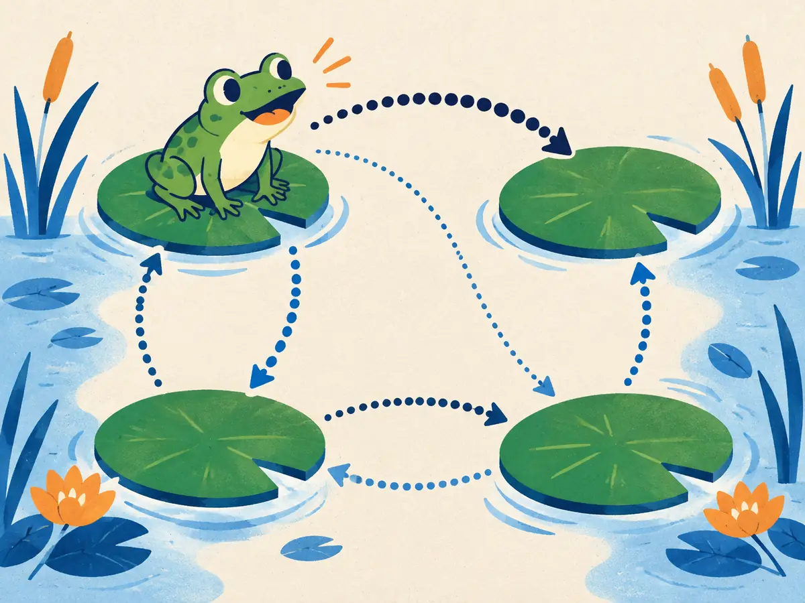

Markov chains & sampling
Generating is mostly "take a random step, then another": a token after a token, a denoising step after a denoising step. A Markov chain is the mathematics of such random walks. Run long enough, many chains settle into a fixed distribution, and that turns them into a way to sample from distributions you could never sample directly.
By the end you can
- Write a transition matrix and push a distribution through it with $\pi_{t+1} = \pi_t P$.
- Find a stationary distribution and explain why many chains forget where they started.
- Explain how Metropolis–Hastings and Langevin dynamics use a chain to sample from a distribution known only up to a constant, and how that leads to score-based diffusion.
Take your best guess. Being wrong now helps the right answer stick later.
Tomorrow's weather depends only on today's (sunny today: 70% sunny tomorrow, and so on). You know it's sunny today. How much does that tell you about the weather a year from now?
- A lot: sunny days lead to sunny days
- Everything: the chain is deterministic
- Almost nothing: after many steps the chain forgets where it started
- It guarantees rain, to balance out
When an LLM samples its next token, what does that choice depend on?
- Only the previous token
- The whole context so far (up to the context window)
- Nothing: each token is drawn independently
- Only the first token of the prompt
States, transitions and the Markov property
In 1906 the Russian mathematician Andrey Markov set out to show that the law of large numbers can hold even when events depend on each other. He invented chains in which each step depends only on the one before. In 1913 he put them to work on 20,000 letters of Pushkin's poem Eugene Onegin, counting how often a vowel follows a vowel or a consonant, arguably the first statistical language model.
A Markov chain has a set of states and moves between them at random, with one rule, the Markov property: the next state depends only on the current one, not on the path that led there.
$$P(X_{t+1} \mid X_t, X_{t-1}, \dots, X_0) = P(X_{t+1} \mid X_t)$$For a handful of states, the rules fit in a transition matrix $P$, where $P_{ij}$ is the probability of moving from state $i$ to state $j$. Each row is a probability distribution (P1.5), so every row sums to 1. If $\pi_t$ is a row vector holding the probability of each state at time $t$, one step of the chain is one vector-matrix product (P1.2):
$$\pi_{t+1} = \pi_t\,P \qquad\text{so}\qquad \pi_t = \pi_0\,P^t$$Worked example
From the animation: $\pi_1 = (0.7, 0.2, 0.1)$. Each entry of $\pi_2$ is $\pi_1$ dotted with a column of $P$:
- Sunny: $0.7 \times 0.7 + 0.2 \times 0.2 + 0.1 \times 0.2 = 0.49 + 0.04 + 0.02 = 0.55$
- Cloudy: $0.7 \times 0.2 + 0.2 \times 0.6 + 0.1 \times 0.4 = 0.14 + 0.12 + 0.04 = 0.30$
- Rainy: $0.7 \times 0.1 + 0.2 \times 0.2 + 0.1 \times 0.4 = 0.07 + 0.04 + 0.04 = 0.15$
- Check: $0.55 + 0.30 + 0.15 = 1$ ✓ (a distribution times a transition matrix stays a distribution)
Which of these could be a row of a transition matrix?
- $(0.5, 0.5, 0.5)$
- $(1.2, -0.2, 0)$
- $(0.3, 0.3, 0.3)$
- $(0, 0, 1)$
The stationary distribution
In the animation the bars stopped moving at $(0.4, 0.4, 0.2)$, and they got there from a sunny start and from a rainy one. That limit is the stationary distribution $\pi$: one step of the chain leaves it unchanged,
$$\pi P = \pi, \qquad \sum_i \pi_i = 1$$Check it for the weather chain: the Sunny entry of $\pi P$ is $0.4 \times 0.7 + 0.4 \times 0.2 + 0.2 \times 0.2 = 0.28 + 0.08 + 0.04 = 0.4$ ✓.
When does every start lead to the same $\pi$? For a finite chain, two conditions are enough. It must be irreducible (every state can eventually reach every other) and aperiodic (it doesn't cycle on a fixed timetable, like A→B→A→B). Then $\pi$ is unique and $\pi_0 P^t \to \pi$ from any $\pi_0$. A single long run also spends a fraction $\pi_i$ of its time in state $i$, which is why the lone walker at the end of the animation reproduced $\pi$.
The most famous stationary distribution is Google's PageRank (Brin & Page, 1998): imagine a surfer clicking random links forever, and rank each page by the share of time spent on it.
Explain like I'm 5

A frog lives on four lily pads. Every minute it hops. From each pad, some hops are popular (thick arrows) and some are rare (thin arrows). The frog doesn't remember where it was before; it only looks at the pad it's sitting on. That's the Markov property.
Watch the frog all day and count where it sits. Some pads get lots of visits, some few. Come back tomorrow and the counts have the same shares, no matter which pad the frog started on. Those shares are the stationary distribution.
Where it breaks: a real frog might get tired or hungry and change its habits. A Markov chain's arrows never change, and it has no memory at all.
Your turn (faded example)
A two-state chain: from A, stay in A with probability 0.9 (go to B with 0.1); from B, go to A with 0.5 (stay in B with 0.5). Start in A.
- $\pi_1$ for state A:
- $\pi_2$ for state A:
- Stationary probability of A, to three decimals:
A chain alternates deterministically: A→B→A→B… Why does it not converge to a stationary distribution from a start in A?
- It is periodic: $\pi_t$ flips between $(1, 0)$ and $(0, 1)$ forever
- It is not irreducible: B can't reach A
- Its rows don't sum to 1
- It has no stationary distribution at all
Sampling with chains: ancestral sampling and MCMC
Generative models use chains in two quite different ways.
Ancestral sampling generates variables in order, parents before children, drawing each from its distribution given what's already drawn. The latent-variable model of P5.2 does it in two steps: $z \sim p(z)$, then $x \sim p(x \mid z)$. A diffusion model does it in many: start from pure noise $x_T$, then draw $x_{T-1}$ given $x_T$, and so on down to an image $x_0$ (G1.3). Each step looks only at the current noisy image, so the reverse process is a Markov chain.
An LLM also samples ancestrally, one token at a time (M1.5). But be careful with the word "Markov" here. Each token depends on the whole context, not on the last token. Generation is a Markov chain only if the state is the entire sequence so far. A chain whose state is just the last token is a bigram model, the kind Claude Shannon used in 1948 to generate eerie, almost-English word salad.
Markov chain Monte Carlo (MCMC) runs the logic of the previous byte backwards. Instead of asking "what is this chain's stationary distribution?", it asks "can I design a chain whose stationary distribution is the $p(x)$ I want?". That's useful when you can evaluate $p$ only up to an unknown constant, $\tilde p(x) = Z\,p(x)$, which is exactly the situation of the intractable evidence in P5.2.
The classic recipe, Metropolis–Hastings (Metropolis et al., 1953, at Los Alamos; generalised by Hastings, 1970), in words:
- From the current point $x$, propose a random nearby point $x'$.
- If $x'$ is more probable, move there. If it's less probable, move there only with probability $\tilde p(x') / \tilde p(x)$; otherwise stay put. (For a symmetric proposal, the acceptance probability is $\min\big(1, \tilde p(x') / \tilde p(x)\big)$.)
- Repeat. After a burn-in period, the visited points are (correlated) samples from $p$.
The unknown constant $Z$ cancels in the ratio, so it is never needed. Uphill moves are always taken and downhill moves sometimes, which is what lets the walker cover the whole distribution instead of getting stuck on the peak.
Why can Metropolis–Hastings sample from $p(x) = \tilde p(x) / Z$ without ever computing $Z$?
- It estimates $Z$ first, using a separate chain
- It only works when $Z = 1$
- It only uses ratios $\tilde p(x') / \tilde p(x)$, in which $Z$ cancels
- It rejects every downhill move, so $Z$ doesn't matter
Langevin dynamics: follow the score, add noise
Metropolis–Hastings proposes blindly. If you can also compute which way the probability rises, you can do much better. That direction is the score, the gradient of the log-density, $\nabla_x \log p(x)$ (P1.4). Like the Metropolis ratio, it ignores $Z$: $\nabla_x \log \big(\tilde p(x)/Z\big) = \nabla_x \log \tilde p(x)$, because the constant's log has zero gradient.
Langevin dynamics, named after Paul Langevin's 1908 equation for particles jostled by molecules (Brownian motion), takes a small step up the score and adds fresh Gaussian noise:
$$x \;\leftarrow\; x + \frac{\eta}{2}\,\nabla_x \log p(x) + \sqrt{\eta}\;z, \qquad z \sim \mathcal N(\mathbf 0, \mathbf I)$$$\eta$ is the step size. The first term is gradient ascent on $\log p$ (P2.2), which on its own would drag every point to the nearest peak. The noise term (P5.1) keeps knocking points around, and the two balance exactly so that, for small $\eta$ and many steps, the points end up distributed as $p$. Each update depends only on the current $x$: it's a Markov chain whose stationary distribution is (approximately) $p$. Try it:
Playground: 500 particles following the score
Target $p(x) = 0.3\,\mathcal N(-1.4, 0.6^2) + 0.7\,\mathcal N(1.2, 0.8^2)$. Every particle starts near $x = -4$ and repeats $x \leftarrow x + \frac{\eta}{2}\nabla\log p(x) + \sqrt\eta\,z$. The dashed line marks the dip between the bumps.
With the noise on, the particles flow up the slope, spill over the dip, and fill both bumps in roughly the right proportions (about 70% on the right). With the noise off, every particle piles onto the left peak, the nearest one, and stays: that's an optimizer, not a sampler. Notice also how slowly particles cross the dip: real samplers struggle most with separated modes.
The bridge to diffusion. Langevin needs the score of the data distribution, which nobody knows for images. Song & Ermon (2019) trained a network $s_\theta(x) \approx \nabla_x \log p(x)$ on noisy copies of the data at many noise levels, then generated images by running Langevin dynamics while lowering the noise level (annealed Langevin). Song et al. (2021) showed that this and DDPM-style diffusion are two views of the same process: each reverse diffusion step is a small move along a learned score plus fresh noise. That's the sampler you'll build in G1.3, and the reason flow matching (G1.5) asks whether the noise can be dropped altogether.
In the playground, why did turning the noise off make every particle end on the left peak?
- Because the left peak has the higher probability
- Without noise the update is gradient ascent on $\log p$, which climbs to the nearest peak and stops
- Because the step size becomes zero
- Because the score is zero everywhere on the left
How can a Markov chain help you sample from a distribution you can only evaluate up to a constant?
Which statement is the Markov property?
- All states are equally likely in the long run
- Given the current state, the next state doesn't depend on earlier ones
- The chain never visits a state twice
- The transition matrix is symmetric
A two-state chain has $P = \begin{pmatrix} 0.5 & 0.5 \\ 0.25 & 0.75 \end{pmatrix}$. What is the stationary probability of the first state?
- $1/2$
- $2/3$
- $1/3$
- $1/4$
Why is an LLM's text generation only a Markov chain if the state is the whole context?
- Because the next-token distribution depends on all previous tokens, not just the last one
- Because LLMs sample with temperature
- Because the vocabulary is too large for a transition matrix
- It isn't a Markov chain under any choice of state
(From P2.2) Drop the noise term from Langevin dynamics. What's left?
- Gradient descent on $p(x)$ with learning rate $\eta$
- Random-walk Metropolis
- Ancestral sampling
- Gradient ascent on $\log p(x)$ with step size $\eta / 2$
Key takeaways
- A Markov chain: the next state depends only on the current one. Rows of the transition matrix $P$ sum to 1, and $\pi_{t+1} = \pi_t P$.
- An irreducible, aperiodic finite chain converges to a unique stationary distribution $\pi = \pi P$ from any start.
- Ancestral sampling draws parents first: latent then data, token after token (state = whole context), noise to image.
- MCMC builds a chain whose stationary distribution is your target; Metropolis–Hastings needs only ratios, so the normalising constant cancels.
- Langevin: $x \leftarrow x + \frac{\eta}{2}\nabla\log p(x) + \sqrt\eta\,z$. With a learned score, this becomes score-based diffusion.
Adding cards schedules your first spaced review.